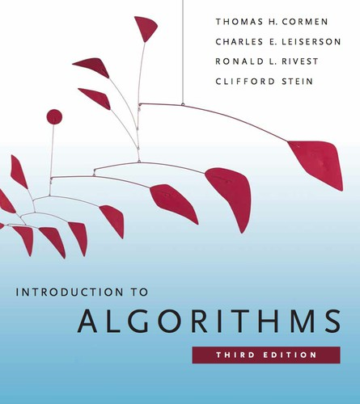
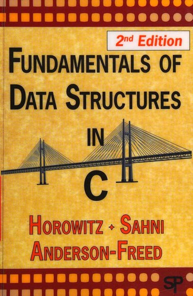
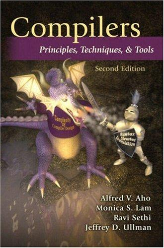
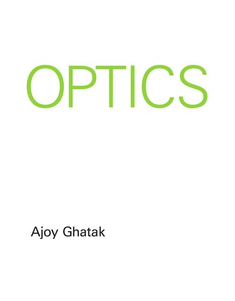
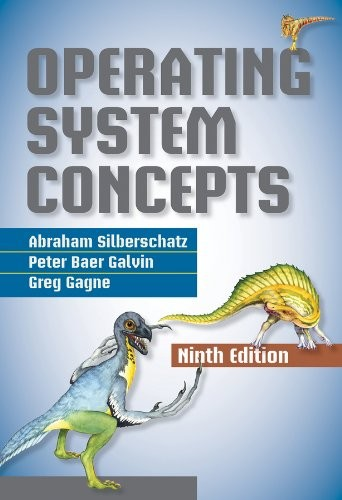
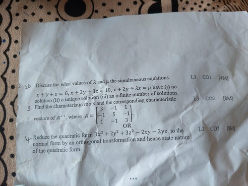

GATE CS Book Arsenal
The only books you need for GATE CS, with real covers, community ratings, and the exact chapters that matter. Don't read cover-to-cover — use the chapter guides below.
| Subject | Recommended Book | Author(s) | Rating | Priority |
|---|---|---|---|---|
| Algorithms | Introduction to Algorithms | Thomas H. Cormen, Charles Leiserson, Ronald Rivest, Clifford Stein | ⭐ 4.4 | Must Have 🔥 |
| Data Structures | Fundamentals of Data Structures in C | Ellis Horowitz, Sartaj Sahni, Susan Anderson-Freed | ⭐ 4.1 | Recommended |
| Discrete Mathematics | Discrete Mathematics and Its Applications | Kenneth H. Rosen | ⭐ 3.9 | Recommended |
| Theory of Computation | An Introduction to Formal Languages and Automata | Peter Linz | ⭐ 4.0 | Best for GATE |
| Compiler Design | Compilers: Principles, Techniques, and Tools | Alfred V. Aho, Monica S. Lam, Ravi Sethi, Jeffrey D. Ullman | ⭐ 4.0 | Selective Chapters |
| Digital Logic | Digital Design | M. Morris Mano | ⭐ 4.2 | Must Have 🔥 |
| Computer Organization (COA) | Computer Organization and Embedded Systems | Carl Hamacher, Zvonko Vranesic, Safwat Zaky, Naraig Manjikian | ⭐ 3.9 | Recommended |
| Operating Systems | Operating System Concepts | Abraham Silberschatz, Peter B. Galvin, Greg Gagne | ⭐ 4.1 | Must Have 🔥 |
| Databases (DBMS) | Database System Concepts | Abraham Silberschatz, Henry F. Korth, S. Sudarshan | ⭐ 4.0 | Must Have 🔥 |
| Computer Networks | Data Communications and Networking | Behrouz A. Forouzan | ⭐ 4.0 | Must Have 🔥 |
| Engineering Mathematics | Higher Engineering Mathematics | B.S. Grewal | ⭐ 4.3 | India's Favourite |
Detailed Book Cards

Introduction to Algorithms
3rd Edition
Ch. 2–4 (Sorting), Ch. 6 (Heaps), Ch. 15 (DP), Ch. 16 (Greedy), Ch. 22–24 (Graph Algorithms)

Fundamentals of Data Structures in C
2nd Edition
Ch. 3 (Stacks/Queues), Ch. 4 (Linked Lists), Ch. 5 (Trees), Ch. 6 (Graphs), Ch. 7 (Sorting)
Discrete Mathematics and Its Applications
7th Edition
Ch. 1 (Logic/Propositions), Ch. 5 (Induction), Ch. 8 (Relations), Ch. 10–11 (Graph Theory), Ch. 6 (Combinatorics)
An Introduction to Formal Languages and Automata
5th Edition
Ch. 2–3 (DFA, NFA, Regex), Ch. 4–5 (CFG, PDA), Ch. 8–9 (TM, Undecidability)

Compilers: Principles, Techniques, and Tools
2nd Edition
Ch. 2 (Lexical Analysis), Ch. 4 (Parsing — LL, LR, SLR, LALR), Ch. 5 (Syntax Directed Translation)
Digital Design
4th Edition
Ch. 1 (Number Systems), Ch. 2 (Boolean Algebra), Ch. 3 (K-Maps), Ch. 4 (Combinational Circuits), Ch. 6 (Sequential Circuits), Ch. 8 (Registers)

Computer Organization and Embedded Systems
6th Edition
Ch. 5 (CPU Design), Ch. 6 (Pipelining), Ch. 8 (Memory Hierarchy/Cache), Ch. 9 (I/O — DMA, Interrupts)

Operating System Concepts
9th Edition
Ch. 5 (CPU Scheduling), Ch. 6 (Process Synchronization), Ch. 7 (Deadlocks), Ch. 8–9 (Memory: Paging, Segmentation, Virtual Memory), Ch. 12 (I/O)
Database System Concepts
6th Edition
Ch. 2–4 (Relational Model, SQL), Ch. 7 (Normalization 1NF–BCNF), Ch. 11 (Indexing, B/B+ Trees), Ch. 14–15 (Transactions, Concurrency)
Data Communications and Networking
5th Edition
Ch. 3 (Data Link: Error Detection), Ch. 5 (Network/IP/Subnetting), Ch. 6 (Transport/TCP/UDP), Ch. 7 (Application: DNS, HTTP, FTP), Ch. 12 (Routing Protocols)

Higher Engineering Mathematics
44th Edition
Unit 4 (Probability & Statistics), Unit 5 (Complex Variables — skip for GATE usually), Ch. on Matrices and Linear Algebra (very important for GATE)